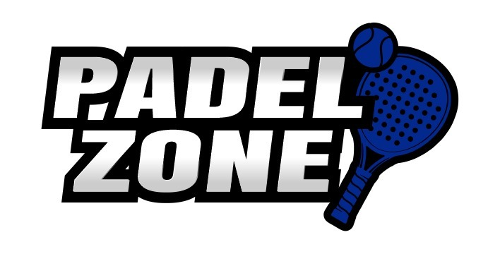
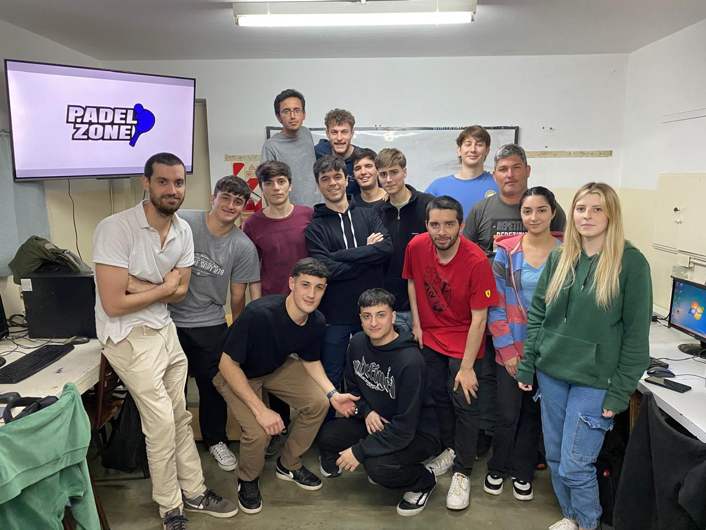
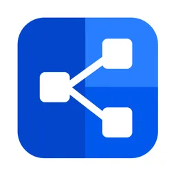
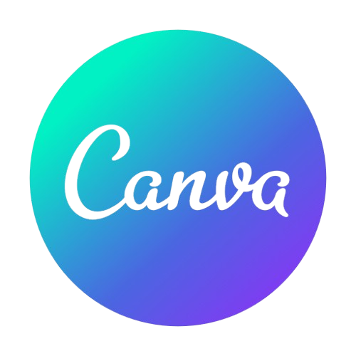
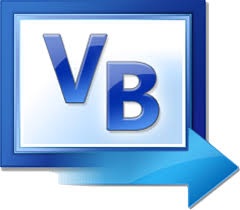
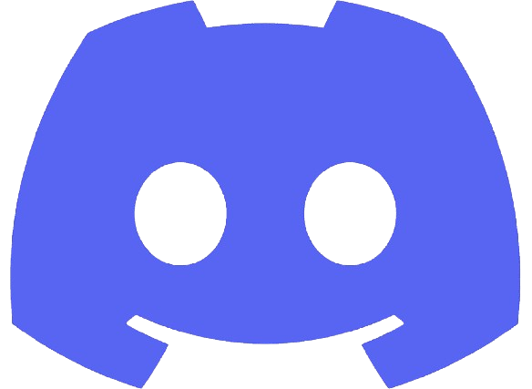
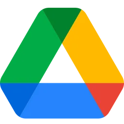
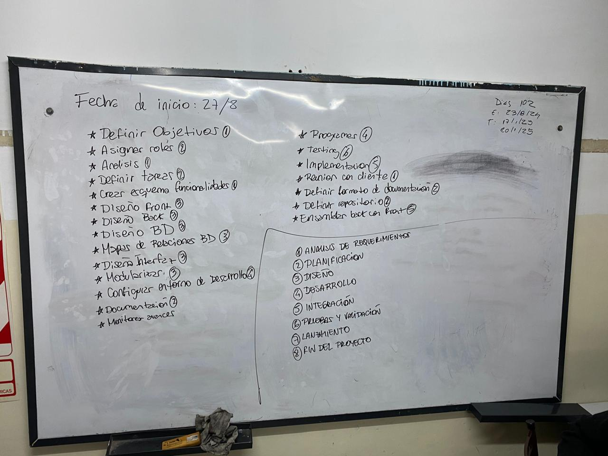
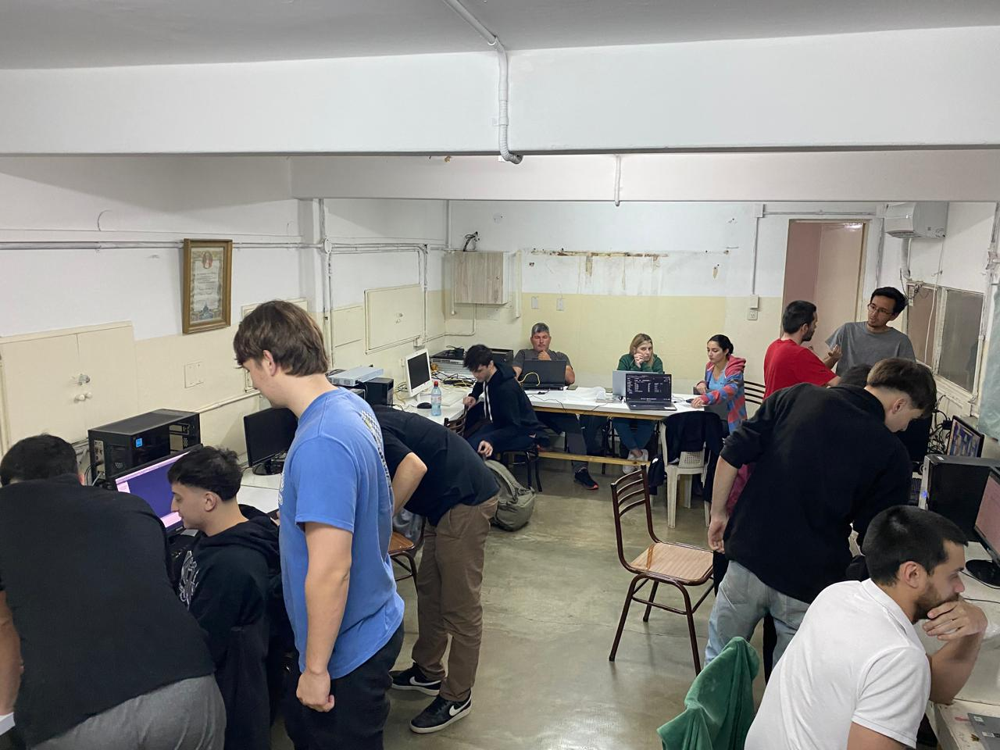

Pádel Zone es una solución integral para la gestión de reservas de pistas de pádel, creada para simplificar la administración y mejorar la experiencia de los encargados del sitio. Con este sistema, los responsables pueden gestionar las reservas de manera eficiente, supervisando la disponibilidad de las pistas en tiempo real y evitando conflictos de horarios. La plataforma ofrece una interfaz intuitiva y fácil de usar, permitiendo a los clientes reservar, visualizar y organizar sus turnos sin complicaciones. Además, Pádel Zone cuenta con características avanzadas que elevan la experiencia. Dicha herramienta está diseñada para ser utilizada por una única persona encargada de la administración, permitiendo gestionar de manera eficiente las reservas, horarios y disponibilidad de las pistas
¿Cómo surgió todo?
Descubre cómo nació la idea, la gestión y el desarrollo de esta aplicación.
Introducción
El proyecto "Pádel Zone" surge como iniciativa de los estudiantes de tercer año de la carrera de Técnico Superior en Desarrollo de Software del Instituto Católico de Enseñanza Superior (ICES), de Venado Tuerto, Santa Fe, y en el ámbito académico perteneciente a la asignatura Gestión de Proyectos, dictada por el profesor Cristian Pachecho. Luego de explorar diferentes métodos de gestión y adquirir conocimientos sobre diversas técnicas grupales y de todos los roles involucrados en un proyecto de Software, se tomó la decisión de consolidar el aprendizaje mediante una experiencia práctica en la dirección de proyectos, aplicando las nuevas habilidades adquiridas a lo largo del año. Esta decisión colectiva implicó enfrentar los desafíos inherentes a la coordinación, así como la administración de los tiempos y recursos necesarios orientados para la ejecución de un proyecto de software simulando un entorno real y colaborativo. La propuesta inicial fue participar en todas las etapas de un proyecto de Software, desempeñando los diferentes roles involucrados desde la planificación y el diseño hasta la implementación y el seguimiento, con el fin de obtener una visión integral del proceso desde su concepción del proyecto hasta su finalización, y desarrollar habilidades prácticas en cada una de las áreas.

Descripción del proyecto
El sistema permite gestionar 3 canchas de pádel. Cada turno presenta una duración de 1 hora y 30 minutos. Los horarios de reserva son:
Gestión del proyecto
El equipo se dividió en varios roles, asignando a los integrantes las tareas según sus gustos. Algunos miembros participaron en más de un rol para asegurar una mayor flexibilidad y colaboración.









